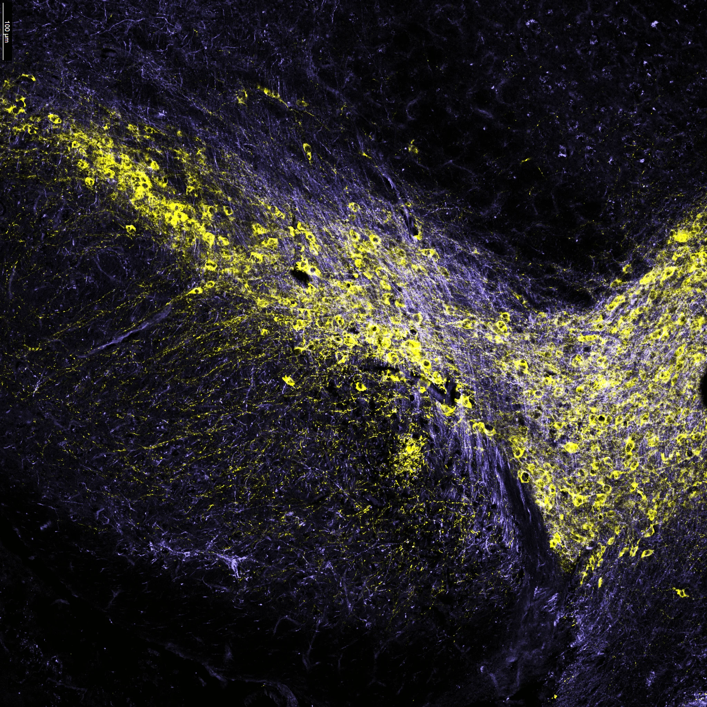
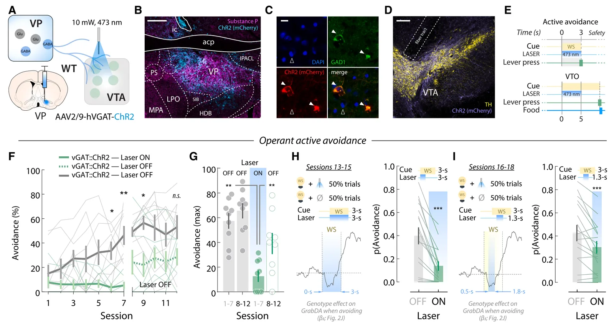
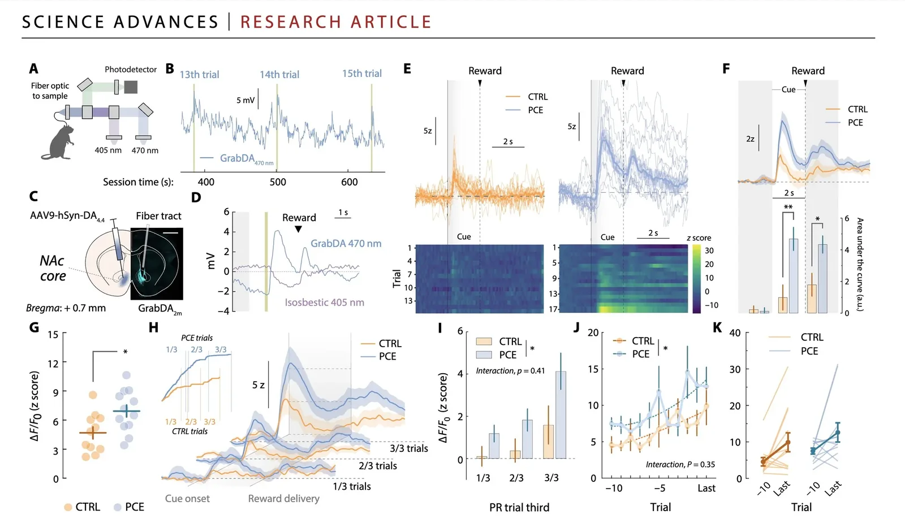
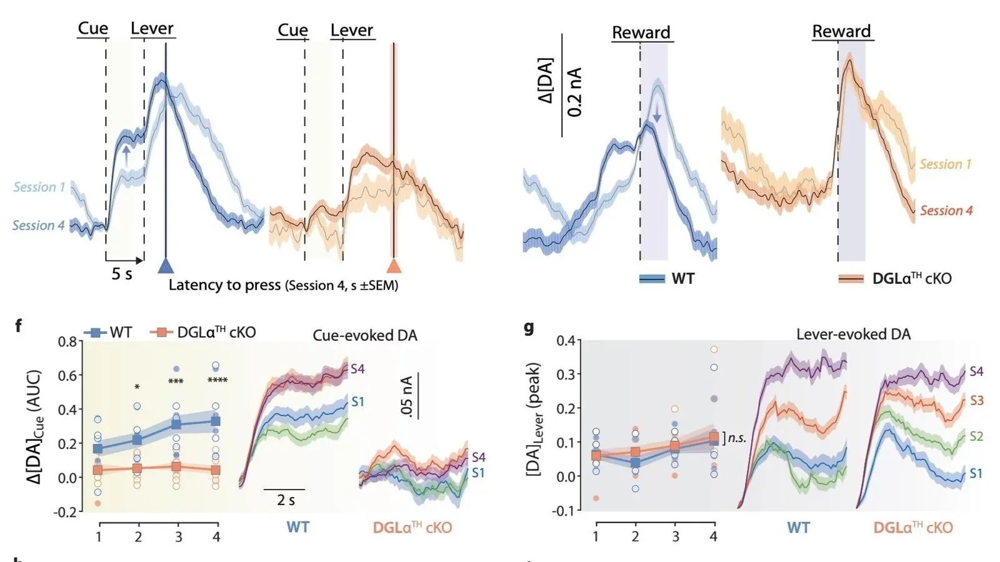

Publications
Dopamine neurons and striatal inputs in the mouse ventral tegmental area
Highlights



2026
-
Midbrain endocannabinoids actuate dopamine-based action selection
Luján MÁ, Young-Morrison R, Kashtelyan V, Loewinger G, Klingenberg TD, Hoffman AF, Gildish I, Covey DP, McDonnell EE, Morgado F, Peters K, Kim AY, Pereira F, Lupica CR, Cheer JF
Cell Reports 45(5): 117298. doi:10.1016/j.celrep.2026.117298
-
Medina-Saldivar C, Cardozo CF, Gildish I, Baidoo N, Chandra R, Luján MÁ, Lobo MK, Venniro M, Cheer JF
Neuropsychopharmacology. doi:10.1038/s41386-026-02561-5
-
Olusakin J, Dewan M, Kashyap A, Franco D, Kumar G, Luján MÁ, Mark KS, Cheer JF, Lobo MK
Translational Psychiatry. doi:10.1038/s41398-026-04049-8
2025
-
Cannabinoid-based Pharmacology for the Management of Substance Use DisordersBook chapter
Luján MÁ, Kim Y, Zhang LY, Cheer JF
Current Topics in Behavioral Neurosciences. doi:10.1007/7854_2024_551
In: Patel S, Cooper Z (eds.), Behavioral Neurobiology of the Endocannabinoid System, 2nd ed. Springer Nature.
2024
-
Luján MÁ*†, Young-Morrison R*, Aroni S, Katona I, Melis M, Cheer JF†
Science Advances 10(45): eadq5652. doi:10.1126/sciadv.adq5652
* Equal contribution. † Corresponding authors.
2023
-
Luján MÁ*, Covey DP*, Young-Morrison R, Zhang LY, Kim A, Morgado F, Patel S, Bass CE, Paladini C, Cheer JF
Nature Communications 14: 7545. doi:10.1038/s41467-023-43131-3
* Equal contribution.
-
Listening to the Data: Computational Approaches to Addiction and LearningReview
Wilkinson CS, Luján MÁ, Hales C, Costa KM, Fiore VG, Knackstedt LA, Kober H
Journal of Neuroscience 43(45): 7547–7553. doi:10.1523/JNEUROSCI.1415-23.2023
-
A multivariate regressor of patterned dopamine release predicts relapse to cocaine
Luján MÁ, Oliver BL, Young-Morrison R, Engi SA, Zhang LY, Wenzel JM, Li Y, Zlebnik NE, Cheer JF
Cell Reports 42(6): 112553. doi:10.1016/j.celrep.2023.112553
2022
-
Alegre-Zurano L, Berbegal-Sáez P, Luján MÁ, Cantacorps L, Martín-Sánchez A, García-Baos A, Valverde O
Biomedicine & Pharmacotherapy 148: 112708. doi:10.1016/j.biopha.2022.112708
2021
-
Luján MÁ, Alegre-Zurano L, Martín-Sánchez A, Cantacorps L, Valverde O
Progress in Neuro-Psychopharmacology & Biological Psychiatry 113: 110462. doi:10.1016/j.pnpbp.2021.110462
-
Alegre-Zurano L, López-Arnau R, Luján MÁ, Camarasa J, Valverde O
International Journal of Molecular Sciences 22(15): 8304. doi:10.3390/ijms22158304
-
Covey DP, Hernandez E, Luján MÁ, Cheer JF
Journal of Neuroscience. doi:10.1523/JNEUROSCI.0285-21.2021
-
Luján MÁ, Cheer JF, Melis M
Current Opinion in Pharmacology 56: 29–38. doi:10.1016/j.coph.2020.08.014
-
Castro-Zavala A, Martín-Sánchez A, Luján MÁ, Valverde O
Addiction Biology 26(2): e12911. doi:10.1111/adb.12911
2020
-
Luján MÁ*, Valverde O*
Frontiers in Behavioral Neuroscience 14: 109. doi:10.3389/fnbeh.2020.00109
* Corresponding authors.
-
Prenatal and postnatal alcohol exposure increases vulnerability to cocaine addiction in adult mice
Cantacorps L, Montagud-Romero S, Luján MÁ, Valverde O
British Journal of Pharmacology 177: 1090–1105. doi:10.1111/bph.14901
-
Luján MÁ, Cantacorps L, Valverde O
Addiction Biology 25: e12778. doi:10.1111/adb.12778
2019
-
Luján MÁ, Colomar L, Tarragón E, López-Cruz L, Pastor R, Font L
Pharmacology Biochemistry and Behavior 176: 101–110. doi:10.1016/j.pbb.2018.12.004
-
Oxytocin prevents the increase of cocaine-related responses produced by social defeat
Ferrer-Pérez C, Castro-Zavala A, Luján MÁ, Filarowska J, Ballestín R, Miñarro J, Valverde O, Rodríguez-Arias M
Neuropharmacology 146: 50–64. doi:10.1016/j.neuropharm.2018.11.011
2018
-
Luján MÁ, Castro-Zavala A, Alegre-Zurano L, Valverde O
Neuropharmacology 143: 163–175. doi:10.1016/j.neuropharm.2018.09.043
2017
-
López-Arnau R*, Luján MÁ*, Duart-Castells L, Pubil D, Camarasa J, Valverde O, Escubedo E
British Journal of Pharmacology 174: 1161–1173. doi:10.1111/bph.13771
* Equal contribution.
2013
-
Font L, Luján MÁ, Pastor R
Frontiers in Behavioral Neuroscience 7: 93. doi:10.3389/fnbeh.2013.00093